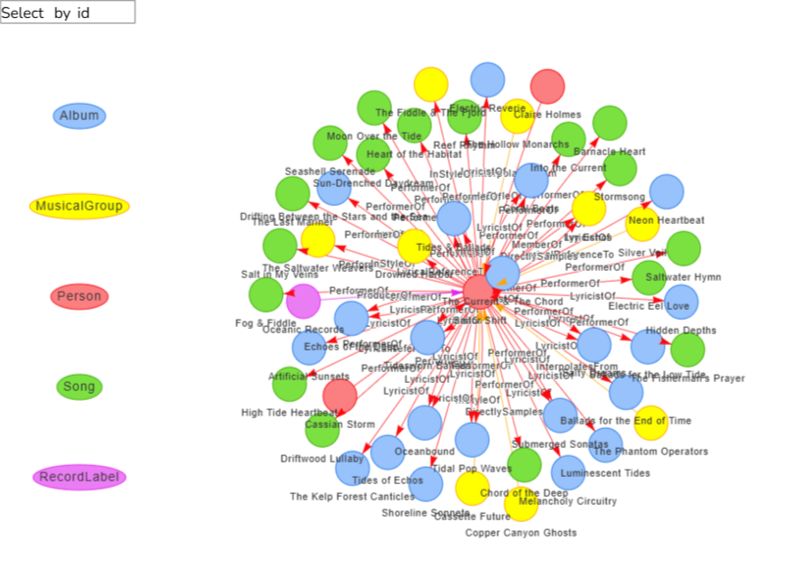

This report presents a prototype of a Story Mode Shiny application designed to explore the rise of Oceanus Folk music through the lens of Sailor Shift’s career. Instead of relying on traditional multi-tab navigation, the app adopts a scrolling linear structure that simulates a feature article—perfect for the app’s core user: journalist Silas Reed.
The application is divided into six narrative sections, integrating interactive components that allow exploration of musical influence, career timelines, genre evolution, artist comparisons, and predictions.
2 🌐 Application Architecture
The application follows a narrative scroll-based UI using shiny::fluidPage() sections, shinyjs::toggle() for transitions, and optionally, shiny.router or shiny.fluent for modular routing.
Section
Title
Role in Narrative
Intro
Sailor’s Origin
Sets the context: Oceanus Folk roots and Sailor’s beginnings
1
Timeline of a Superstar
Career trajectory, Ivy Echoes, and major solo milestones
Influence score by artist (based on degree centrality)
Genre evolution index (Oceanus Folk % over time)
Artist trait matrix: collaborations, output, genre reach
8 📊 Visualisation Design Rationale
Visualization
Used For
Reason
Timeline Chart
Career progression
Shows how Sailor evolved, contextualized over time
visNetwork Graph
Collaboration & influence networks
Visualizes both direct and indirect musical links
Heat map
Genre rise and fall
Emphasizes Oceanus Folk’s global impact over time
Radar Chart
Artist comparison
Profile rising stars using multiple metrics
Table
Predictions with justification
Shows forecasted next stars in an easy-to-digest format
9 🔧 Code Snippet Examples (Tested)
9.1 📈 Timeline Chart
Code
ggplot(notoriety_by_decade, aes(x =factor(notoriety_decade), y = n, group = genre)) +geom_line(color ="darkblue") +geom_point(size =3) +facet_wrap(~ genre, scales ="free_y") +labs(title ="Cycle Plot: Notable Genres by Decade (Top 5 Genres)",x ="Decade",y ="Number of Notable Songs" ) +theme_minimal()
9.2 🌐 Collaboration Network
Code
# Function to create visNetwork graph for a given artistcreate_artist_graph <-function(artist_name) {# Get artist node ID artist_node <- nodes_tbl %>%filter(name == artist_name | stage_name == artist_name)if (nrow(artist_node) ==0) {stop(paste("Artist", artist_name, "not found in nodes.")) } artist_id <- artist_node$id[1]# Get all edges connected to artist (source or target) connected_edges <- edges_tbl %>%filter(source == artist_id | target == artist_id)# Get all unique node IDs involved in those edges related_ids <-unique(c(connected_edges$source, connected_edges$target))# Filter nodes and edges filtered_nodes <- nodes_tbl %>%filter(id %in% related_ids) %>%mutate(label = name,group = node_type,title =paste0("<b>", name, "</b><br>", node_type),id =as.character(id)) # Ensure ID is character filtered_edges <- connected_edges %>%mutate(from =as.character(source),to =as.character(target),label = edge_type,arrows ="to") %>%select(from, to, label, arrows)# Create visNetwork graphvisNetwork(filtered_nodes, filtered_edges, height ="600px", width ="100%") %>%visEdges(smooth =TRUE) %>%visOptions(highlightNearest =TRUE, nodesIdSelection =TRUE) %>%visLegend() %>%visLayout(randomSeed =123) %>%visPhysics(stabilization =TRUE) %>%visExport()}

9.3 📊 Heat map
Code
ggplot(genre_notoriety_heatmap, aes(x =factor(notoriety_decade), y =fct_rev(genre), fill = n)) +geom_tile(color ="white") +scale_fill_gradient(low ="lightyellow", high ="darkblue") +labs(title ="Heatmap of Notable Songs by Genre and Decade",x ="Notoriety Decade",y ="Genre",fill ="Song Count" ) +theme_minimal()
10 ✅ Outcome
This Story Mode Shiny prototype offers a narrative-first interface that aligns with the needs of a journalist user. Instead of separating tasks rigidly, it tells a coherent story about:
The evolution of Sailor Shift and her collaborators
The transformation and global impact of Oceanus Folk
The defining traits of rising stars and what comes next
By structuring the dashboard as a scrollable data story, the app goes beyond analysis to become an engaging editorial companion.